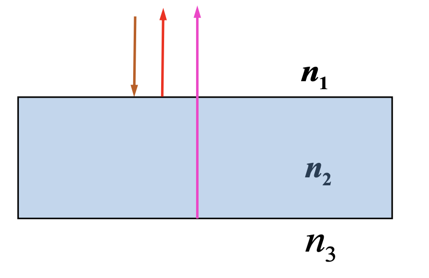
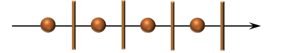
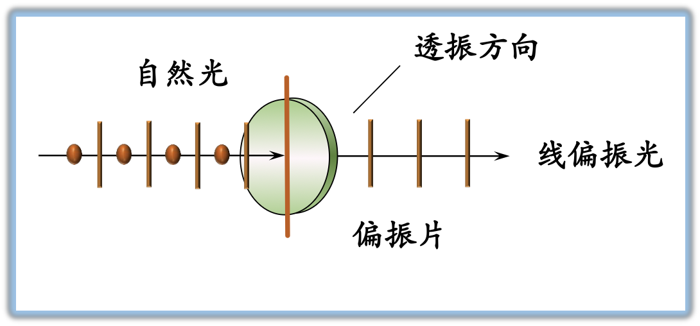
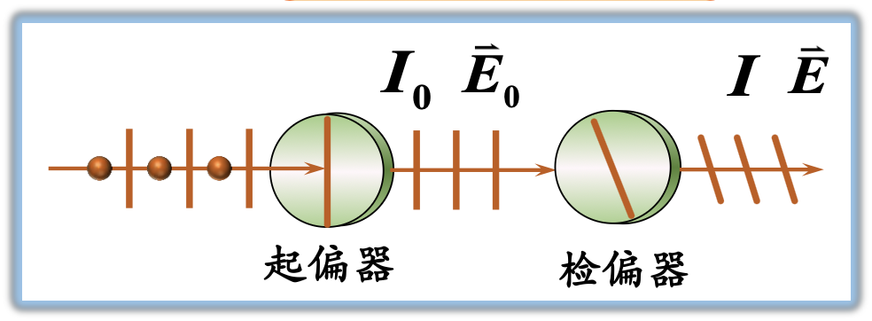
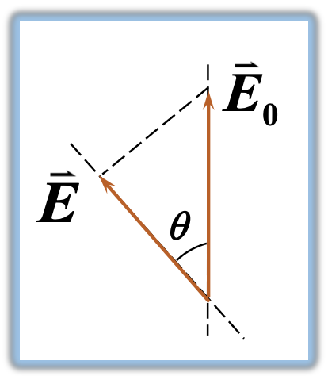

板书内容：点我跳转
电磁波谱
把电磁波按照波长或频率的顺序把这些电磁波排列起来，就是电磁波谱。可分为无线电波，微波，红外线，可见光，紫外线，伦琴射线，伽玛射线。

光的单色性和相干性、光程
光源
光
光 (可见光) 指真空中波长为 $4000 \sim 7600 \text{\AA}$ 的电磁波
普通光源发光机理
光由光源中大量原子或分子从高能激发态向低能级状态跃迁时产生的。
发光特点: 频率不同、振动方向不同、无确定相位关系、长度有限的独立的波列。
光的单色性和相干性
光的单色性
- 单色光: 具有单一频率 (波长) 的光。
- 单色光的获得: 单色光源 (钠光灯)、利用三棱镜色散、通过滤光片、激光。
光的相干性
相干光的相干条件
- 同频率、同振动方向、在相遇点相位差恒定为相干光。
- 补充条件 两束光在相遇点的光强差不能太大。
光程 & 光程差
定义
若光在折射率为 n 的介质中传播的几何距离为 r，则光程为 nr。
物理意义：光在媒质中传播的路程 r 等效于相同时间内在真空中能够传播 nr 的路程。
相位差与光程差的关系
$$ \Delta \phi = \frac{2\pi}{\lambda_{真空}}\delta $$$\lambda$ 为真空中的波长，$\delta = n_2 r_2 - n_1 r_1$
光波的干涉
在一定条件下，两光波相遇时，使某些点的振动始终加强，而另一些点的振动始终减弱或完全抵消的现象，称为光的干涉现象。
产生干涉的条件
- 频率相同
- 振动方向相同
- 相位相同或相位差恒定
产生明暗干涉条纹的条件
这里 PPT 有点混乱，我自己改了一下
- 干涉增强的条件: $\Delta \varphi = \pm 2k\pi,\ k = 0,1,2,3,\dots$, $A = A_{\max} = A_1 + A_2$.
- 干涉减弱的条件: $\Delta \varphi = \pm (2k + 1)\pi,\ k = 0,1,2,3,\dots$, $A = A_{\min} = |A_1 - A_2|$.
用相位差表示为
$$ \Delta \varphi = \frac{2\pi}{\lambda_{真空}}\delta = \begin{cases} \pm 2k\pi & 干涉增强\\ \pm (2k + 1) \pi & 干涉减弱 \end{cases} \ k = 0,\pm 1,\pm 2, \dots $$用光程差表示为
$$ \Delta \delta = \begin{cases} \pm k\lambda\pi & 干涉增强\\ \pm (2k + 1)\frac{\lambda}{2} \pi & 干涉减弱 \end{cases} \ \delta = n_2 r_2 - n_1 r_1,\ \ k = 0,\pm 1,\pm 2, \dots $$薄膜干涉
薄膜干涉
光波经薄膜两表面反射或透射后相互叠加所形成的干涉现象。
- 反射光光程差$$\delta = 2n_2e + \frac{\lambda}{2}$$e 是薄膜厚度。
- 薄膜干涉加强与减弱的条件$$\delta = 2n_2e + \frac{\lambda}{2} =\begin{cases}k\lambda\ (k = 1,2,\dots) & 加强\\(2k + 1)\frac{\lambda}{2}\ (k = 0,1,2,\dots) & 减弱\end{cases}$$

薄膜干涉的应用——增透膜与增反膜
定义
- 增加透射率的薄膜叫做增透膜
- 增加反射率的薄膜叫做增反膜
条件
$$ \delta = 2n_2e + \frac{\lambda}{2} = \begin{cases} (2k + 1)\frac{\lambda}{2}\ (k = 0,1,2,\dots) & 干涉减弱\ 增透\\ k\lambda\ (k = 1,2,\dots) & 干涉增强\ 增反 \end{cases} $$光的偏振 马吕斯定律
光的偏振态
光是横波，光具有偏振现象。
常见的偏振态
自然光
包含各个方向的光振动，在所有可能的方向上 的振幅都相等的光。
表示:
部分偏振光
某一方向的光振动比与之相垂直方向的光振动占优势的光。
表示:

偏振光
只含有单一方向光振动的光叫做偏振光。也称为线偏振光、平面偏振光、完全偏振光。
表示:

偏振片及透振方向
- 偏振片: 能吸收某一方向的光振动，只允许与之垂直方向上的光振动通过的一种光学元件。 
- 透振方向: 偏振片上允许通过的光振动方向称为偏振片的偏振化方向。
马吕斯定律
一束光强为 $I_0$ 的线偏振光，透过检偏器以后，透射光强为: $$I = I_0\cos^2\theta$$
- 一束光强为 的自然光透过起偏器，透射光强为: $I = \frac{I_0}{2}$
- $\theta = 0$ 时，$I = I_0$
- $\theta = 90\degree$ 时，$I = 0$
$$E = E_0 \cos \theta$$$$ \frac{I}{I_o} = \frac{E^2}{E_0^2}$$
$\theta$ 为线偏光的振动方向与透振方向的夹角。
板书
- X 射线: 拍片，CT，XRD (X 射线衍射)，消融术
- $1 \text{nm} = 10 \text{\AA} = 1 \times 10^{-10}\text{m}$
- 可见光范围: $4000 \sim 7600 \text{\AA}$
- 镀膜 $e_{\min} = \frac{\lambda_{介质}}{4}$
- 偏振片是二向色性物质
课堂彩蛋
- 研究生面试时，一考生被问到如何测纳米材料的间距，他思考了数秒后，表示用游标卡尺，当场被 pass（实际上应该用 X 射线衍射法）。
- 有一种手机叫 wāi wāi cào[?]。